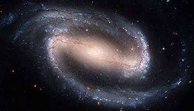

The acronym NGC stands for “New General Catalogue” and usually precedes a number in the catalogue, like NGC 4258 for example. The catalogue refers to objects which are extended and distinctly non-star like in nature. When the catalogue was first created the true nature of many of the objects was poorly understood, and hence there is not necessarily a very logical connection between all of the entries which range from galaxies to globular clusters, supernova remnants to nebulae.

The New General Catalogue was originally compiled by J.L.E. Dreyer in 1888. There are some ~8,000 objects with NGC numbers.